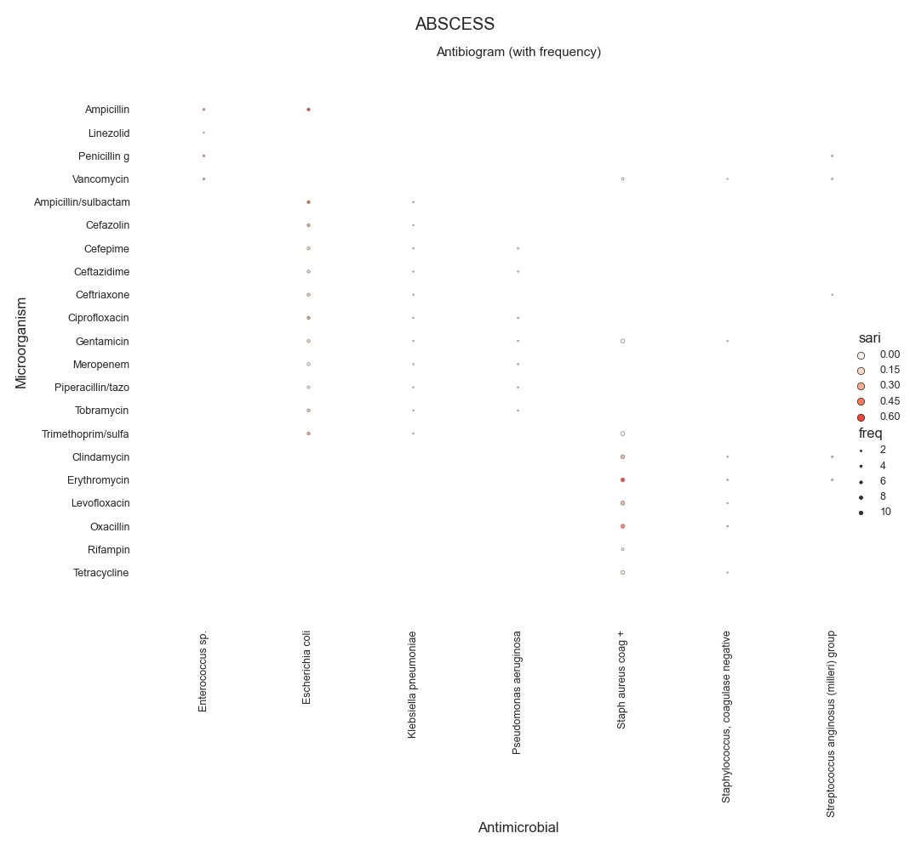
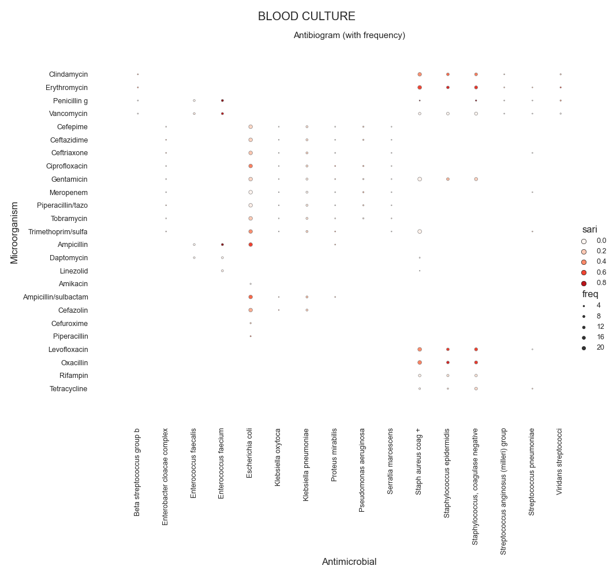

Note
Click here to download the full example code
SARI - Antibiogram (relmap)¶
Todo
Explain and Simplify
- 
- 

Out:
Data:
SENSITIVITY SPECIE ANTIBIOTIC intermediate ... freq microorganism_genus antimicrobial_class
0 Enterococcus sp. Ampicillin 0.0 ... 305.0 Enterococcus NaN
1 Enterococcus sp. Linezolid 2.0 ... 109.0 Enterococcus Oxazolidinones
2 Enterococcus sp. Penicillin g 0.0 ... 305.0 Enterococcus NaN
3 Enterococcus sp. Vancomycin 1.0 ... 305.0 Enterococcus Glycopeptide
4 Escherichia coli Ampicillin 5.0 ... 610.0 Escherichia NaN
5 Escherichia coli Ampicillin/sulbactam 107.0 ... 612.0 Escherichia NaN
6 Escherichia coli Cefazolin 5.0 ... 612.0 Escherichia NaN
7 Escherichia coli Cefepime 19.0 ... 610.0 Escherichia NaN
8 Escherichia coli Ceftazidime 11.0 ... 612.0 Escherichia Cephalosporins
9 Escherichia coli Ceftriaxone 2.0 ... 612.0 Escherichia Cephalosporins
10 Escherichia coli Ciprofloxacin 2.0 ... 612.0 Escherichia Fluoroquinolones
11 Escherichia coli Gentamicin 1.0 ... 612.0 Escherichia Aminoglycosides
12 Escherichia coli Meropenem 1.0 ... 612.0 Escherichia Meropenems
13 Escherichia coli Piperacillin/tazo 13.0 ... 505.0 Escherichia NaN
14 Escherichia coli Tobramycin 74.0 ... 612.0 Escherichia Aminoglycosides
15 Escherichia coli Trimethoprim/sulfa 0.0 ... 611.0 Escherichia NaN
16 Klebsiella pneumoniae Ampicillin/sulbactam 8.0 ... 126.0 Klebsiella NaN
17 Klebsiella pneumoniae Cefazolin 0.0 ... 126.0 Klebsiella NaN
18 Klebsiella pneumoniae Cefepime 4.0 ... 125.0 Klebsiella NaN
19 Klebsiella pneumoniae Ceftazidime 2.0 ... 126.0 Klebsiella Cephalosporins
20 Klebsiella pneumoniae Ceftriaxone 0.0 ... 126.0 Klebsiella Cephalosporins
21 Klebsiella pneumoniae Ciprofloxacin 4.0 ... 126.0 Klebsiella Fluoroquinolones
22 Klebsiella pneumoniae Gentamicin 0.0 ... 126.0 Klebsiella Aminoglycosides
23 Klebsiella pneumoniae Meropenem 0.0 ... 126.0 Klebsiella Meropenems
24 Klebsiella pneumoniae Piperacillin/tazo 3.0 ... 105.0 Klebsiella NaN
25 Klebsiella pneumoniae Tobramycin 0.0 ... 126.0 Klebsiella Aminoglycosides
26 Klebsiella pneumoniae Trimethoprim/sulfa 0.0 ... 126.0 Klebsiella NaN
27 Pseudomonas aeruginosa Cefepime 14.0 ... 139.0 Pseudomonas NaN
28 Pseudomonas aeruginosa Ceftazidime 6.0 ... 139.0 Pseudomonas Cephalosporins
29 Pseudomonas aeruginosa Ciprofloxacin 11.0 ... 139.0 Pseudomonas Fluoroquinolones
30 Pseudomonas aeruginosa Gentamicin 9.0 ... 138.0 Pseudomonas Aminoglycosides
31 Pseudomonas aeruginosa Meropenem 11.0 ... 139.0 Pseudomonas Meropenems
32 Pseudomonas aeruginosa Piperacillin/tazo 7.0 ... 137.0 Pseudomonas NaN
33 Pseudomonas aeruginosa Tobramycin 0.0 ... 139.0 Pseudomonas Aminoglycosides
34 Staph aureus coag + Clindamycin 0.0 ... 1044.0 Staph Macrolides
35 Staph aureus coag + Erythromycin 1.0 ... 1110.0 Staph Macrolides
36 Staph aureus coag + Gentamicin 1.0 ... 1112.0 Staph Aminoglycosides
37 Staph aureus coag + Levofloxacin 0.0 ... 1098.0 Staph Fluoroquinolones
38 Staph aureus coag + Oxacillin 0.0 ... 1111.0 Staph Penicillins
39 Staph aureus coag + Rifampin 0.0 ... 471.0 Staph NaN
40 Staph aureus coag + Tetracycline 0.0 ... 930.0 Staph Tetracyclines
41 Staph aureus coag + Trimethoprim/sulfa 1.0 ... 1111.0 Staph NaN
42 Staph aureus coag + Vancomycin 1.0 ... 466.0 Staph Glycopeptide
43 Staphylococcus, coagulase negative Clindamycin 8.0 ... 115.0 Staphylococcus, Macrolides
44 Staphylococcus, coagulase negative Erythromycin 0.0 ... 118.0 Staphylococcus, Macrolides
45 Staphylococcus, coagulase negative Gentamicin 6.0 ... 118.0 Staphylococcus, Aminoglycosides
46 Staphylococcus, coagulase negative Levofloxacin 0.0 ... 116.0 Staphylococcus, Fluoroquinolones
47 Staphylococcus, coagulase negative Oxacillin 0.0 ... 117.0 Staphylococcus, Penicillins
48 Staphylococcus, coagulase negative Tetracycline 0.0 ... 117.0 Staphylococcus, Tetracyclines
49 Staphylococcus, coagulase negative Vancomycin 0.0 ... 117.0 Staphylococcus, Glycopeptide
50 Streptococcus anginosus (milleri) group Ceftriaxone 5.0 ... 120.0 Streptococcus Cephalosporins
51 Streptococcus anginosus (milleri) group Clindamycin 3.0 ... 237.0 Streptococcus Macrolides
52 Streptococcus anginosus (milleri) group Erythromycin 2.0 ... 239.0 Streptococcus Macrolides
53 Streptococcus anginosus (milleri) group Penicillin g 17.0 ... 236.0 Streptococcus NaN
54 Streptococcus anginosus (milleri) group Vancomycin 0.0 ... 237.0 Streptococcus Glycopeptide
[55 rows x 9 columns]
Columns:
Index(['SPECIE', 'ANTIBIOTIC', 'intermediate', 'resistant', 'sensitive', 'sari', 'freq', 'microorganism_genus', 'antimicrobial_class'], dtype='object', name='SENSITIVITY')
Frequencies:
count 55.0000
mean 380.5455
std 329.7267
min 105.0000
25% 126.0000
50% 236.0000
75% 612.0000
max 1112.0000
Name: freq, dtype: float64
Data:
SENSITIVITY SPECIE ANTIBIOTIC intermediate resistant sensitive sari freq microorganism_genus antimicrobial_class
0 Beta streptococcus group b Clindamycin 2.0 66.0 125.0 0.3523 193.0 Beta Macrolides
1 Beta streptococcus group b Erythromycin 0.0 85.0 110.0 0.4359 195.0 Beta Macrolides
2 Beta streptococcus group b Penicillin g 0.0 0.0 192.0 0.0000 192.0 Beta NaN
3 Beta streptococcus group b Vancomycin 0.0 0.0 195.0 0.0000 195.0 Beta Glycopeptide
4 Enterobacter cloacae complex Cefepime 3.0 12.0 136.0 0.0993 151.0 Enterobacter NaN
.. ... ... ... ... ... ... ... ... ...
126 Streptococcus pneumoniae Vancomycin 0.0 0.0 161.0 0.0000 161.0 Streptococcus Glycopeptide
127 Viridans streptococci Clindamycin 7.0 47.0 233.0 0.1882 287.0 Viridans Macrolides
128 Viridans streptococci Erythromycin 8.0 166.0 113.0 0.6063 287.0 Viridans Macrolides
129 Viridans streptococci Penicillin g 87.0 12.0 195.0 0.3367 294.0 Viridans NaN
130 Viridans streptococci Vancomycin 0.0 0.0 292.0 0.0000 292.0 Viridans Glycopeptide
[131 rows x 9 columns]
Columns:
Index(['SPECIE', 'ANTIBIOTIC', 'intermediate', 'resistant', 'sensitive', 'sari', 'freq', 'microorganism_genus', 'antimicrobial_class'], dtype='object', name='SENSITIVITY')
Frequencies:
count 131.0000
mean 689.3969
std 730.1422
min 116.0000
25% 153.5000
50% 292.0000
75% 1030.5000
max 2349.0000
Name: freq, dtype: float64
Data:
SENSITIVITY SPECIE ANTIBIOTIC intermediate resistant ... sari freq microorganism_genus antimicrobial_class
0 Enterobacter cloacae Cefepime 1.0 4.0 ... 0.0379 132.0 Enterobacter NaN
1 Enterobacter cloacae Ceftazidime 3.0 25.0 ... 0.2121 132.0 Enterobacter Cephalosporins
2 Enterobacter cloacae Ceftriaxone 6.0 24.0 ... 0.2273 132.0 Enterobacter Cephalosporins
3 Enterobacter cloacae Ciprofloxacin 0.0 15.0 ... 0.1136 132.0 Enterobacter Fluoroquinolones
4 Enterobacter cloacae Gentamicin 3.0 6.0 ... 0.0682 132.0 Enterobacter Aminoglycosides
.. ... ... ... ... ... ... ... ... ...
91 Staphylococcus, coagulase negative Vancomycin 0.0 0.0 ... 0.0000 470.0 Staphylococcus, Glycopeptide
92 Streptococcus anginosus (milleri) group Clindamycin 0.0 45.0 ... 0.2616 172.0 Streptococcus Macrolides
93 Streptococcus anginosus (milleri) group Erythromycin 4.0 58.0 ... 0.3563 174.0 Streptococcus Macrolides
94 Streptococcus anginosus (milleri) group Penicillin g 10.0 0.0 ... 0.0581 172.0 Streptococcus NaN
95 Streptococcus anginosus (milleri) group Vancomycin 0.0 0.0 ... 0.0000 173.0 Streptococcus Glycopeptide
[96 rows x 9 columns]
Columns:
Index(['SPECIE', 'ANTIBIOTIC', 'intermediate', 'resistant', 'sensitive', 'sari', 'freq', 'microorganism_genus', 'antimicrobial_class'], dtype='object', name='SENSITIVITY')
Frequencies:
count 96.0000
mean 839.7396
std 1586.3044
min 103.0000
25% 172.7500
50% 286.5000
75% 633.0000
max 6560.0000
Name: freq, dtype: float64
Data:
SENSITIVITY SPECIE ANTIBIOTIC intermediate ... freq microorganism_genus antimicrobial_class
0 Positive for methicillin resistant s... Clindamycin 1.0 ... 171.0 Positive Macrolides
1 Positive for methicillin resistant s... Erythromycin 0.0 ... 174.0 Positive Macrolides
2 Positive for methicillin resistant s... Gentamicin 1.0 ... 174.0 Positive Aminoglycosides
3 Positive for methicillin resistant s... Levofloxacin 0.0 ... 171.0 Positive Fluoroquinolones
4 Positive for methicillin resistant s... Oxacillin 0.0 ... 174.0 Positive Penicillins
5 Positive for methicillin resistant s... Rifampin 0.0 ... 174.0 Positive NaN
6 Positive for methicillin resistant s... Tetracycline 0.0 ... 174.0 Positive Tetracyclines
7 Positive for methicillin resistant s... Trimethoprim/sulfa 0.0 ... 174.0 Positive NaN
8 Positive for methicillin resistant s... Vancomycin 0.0 ... 174.0 Positive Glycopeptide
9 Staph aureus coag + Clindamycin 4.0 ... 2637.0 Staph Macrolides
10 Staph aureus coag + Erythromycin 10.0 ... 2703.0 Staph Macrolides
11 Staph aureus coag + Gentamicin 5.0 ... 2710.0 Staph Aminoglycosides
12 Staph aureus coag + Levofloxacin 1.0 ... 2682.0 Staph Fluoroquinolones
13 Staph aureus coag + Oxacillin 0.0 ... 2715.0 Staph Penicillins
14 Staph aureus coag + Rifampin 1.0 ... 231.0 Staph NaN
15 Staph aureus coag + Tetracycline 0.0 ... 2105.0 Staph Tetracyclines
16 Staph aureus coag + Trimethoprim/sulfa 0.0 ... 2707.0 Staph NaN
17 Staph aureus coag + Vancomycin 0.0 ... 235.0 Staph Glycopeptide
[18 rows x 9 columns]
Columns:
Index(['SPECIE', 'ANTIBIOTIC', 'intermediate', 'resistant', 'sensitive', 'sari', 'freq', 'microorganism_genus', 'antimicrobial_class'], dtype='object', name='SENSITIVITY')
Frequencies:
count 18.0000
mean 1126.9444
std 1223.4530
min 171.0000
25% 174.0000
50% 202.5000
75% 2670.7500
max 2715.0000
Name: freq, dtype: float64
Data:
SENSITIVITY SPECIE ANTIBIOTIC P intermediate ... sari freq microorganism_genus antimicrobial_class
0 Citrobacter freundii complex Cefepime 0.0 13.0 ... 0.0741 594.0 Citrobacter NaN
1 Citrobacter freundii complex Ceftazidime 0.0 9.0 ... 0.2131 596.0 Citrobacter Cephalosporins
2 Citrobacter freundii complex Ceftriaxone 0.0 13.0 ... 0.2243 593.0 Citrobacter Cephalosporins
3 Citrobacter freundii complex Ciprofloxacin 0.0 17.0 ... 0.0973 596.0 Citrobacter Fluoroquinolones
4 Citrobacter freundii complex Gentamicin 0.0 0.0 ... 0.0705 596.0 Citrobacter Aminoglycosides
.. ... ... ... ... ... ... ... ... ...
167 Staphylococcus, coagulase negative Oxacillin 0.0 0.0 ... 0.5613 1003.0 Staphylococcus, Penicillins
168 Staphylococcus, coagulase negative Penicillin g 0.0 0.0 ... 0.8759 137.0 Staphylococcus, NaN
169 Staphylococcus, coagulase negative Tetracycline 0.0 17.0 ... 0.1397 938.0 Staphylococcus, Tetracyclines
170 Staphylococcus, coagulase negative Vancomycin 0.0 0.0 ... 0.0000 939.0 Staphylococcus, Glycopeptide
171 Stenotrophomonas maltophilia Trimethoprim/sulfa 0.0 0.0 ... 0.0093 108.0 Stenotrophomonas NaN
[172 rows x 10 columns]
Columns:
Index(['SPECIE', 'ANTIBIOTIC', 'P', 'intermediate', 'resistant', 'sensitive', 'sari', 'freq', 'microorganism_genus', 'antimicrobial_class'], dtype='object', name='SENSITIVITY')
Frequencies:
count 172.0000
mean 3283.4593
std 6594.3569
min 104.0000
25% 369.7500
50% 656.5000
75% 2618.0000
max 25581.0000
Name: freq, dtype: float64
12 13 14 15 16 17 18 19 20 21 22 23 24 25 26 27 28 29 30 31 32 33 34 35 36 37 38 39 40 41 42 43 44 45 46 47 48 49 50 51 52 53 54 55 56 57 58 59 60 61 62 63 64 65 66 67 68 69 70 71 72 73 74 75 76 77 78 79 80 81 82 83 84 85 86 87 88 89 90 91 92 93 94 95 96 97 98 99 100 101 102 103 104 105 106 107 108 109 110 111 112 113 114 115 116 117 118 119 120 121 122 123 124 125 126 127 128 129 130 131 132 133 134 135 136 137 138 139 140 141 142 143 144 145 146 147 148 149 150 151 152 153 154 155 156 157 158 159 160 161 162 163 164 165 166 167 168 169 170 171 172 173 174 175 176 177 178 179 180 181 182 183 184 185 186 187 188 189 190 191 192 193 194 195 196 197 198 199 200 201 202 203 204 205 206 207 208 209 210 211 212 213 214 215 216 217 218 | # Libraries
import sys
import glob
import numpy as np
import pandas as pd
import seaborn as sns
import matplotlib as mpl
import matplotlib.pyplot as plt
# Import own libraries
from pyamr.core.freq import Frequency
from pyamr.core.sari import SARI
from pyamr.datasets.load import load_data_mimic
# -------------------------
# Configuration
# -------------------------
# Configure seaborn style (context=talk)
sns.set(style="white")
# Set matplotlib
mpl.rcParams['xtick.labelsize'] = 9
mpl.rcParams['ytick.labelsize'] = 9
mpl.rcParams['axes.titlesize'] = 11
mpl.rcParams['legend.fontsize'] = 9
# Pandas configuration
pd.set_option('display.max_colwidth', 40)
pd.set_option('display.width', 300)
pd.set_option('display.precision', 4)
# Numpy configuration
np.set_printoptions(precision=2)
# ------------------------------------------------------------
# Methods
# ------------------------------------------------------------
def get_category_colors(index, category, cmap='hls'):
"""This method creates the colors for the different elements in
categorical feature vector.
Parameters
----------
values : array-like
The vector with the categorical values
cmap: string-like
The colormap to use
default: string-like
The color to be used for the first value. Note that this
value needs to appear first on the the sorted list, as such
it is recommended to set is as _default.
Returns
-------
"""
# Get categories
categories = index.get_level_values(category)
# Get unique elements
unique = np.unique(categories)
# Create the palette
palette = sns.color_palette(cmap, desat=0.5, n_colors=unique.shape[0])
# Create mappers from category to color
mapper = dict(zip(map(str, unique), palette))
# Create list with colors for each category
colors = pd.Series(categories, index=index).map(mapper)
# Return
return colors
def create_mapper(dataframe, column_key, column_value):
"""This method constructs a mapper
Parameters
----------
dataframe: dataframe-like
The dataframe from which the columns are extracted
column_key: string-like
The name of the column with the values for the keys of the mapper
column_value: string-like
The name of the column with the values for the values of the mapper
Returns
-------
dictionary
"""
dataframe = dataframe[[column_key, column_value]]
dataframe = dataframe.drop_duplicates()
return dict(zip(dataframe[column_key], dataframe[column_value]))
# --------------------------------------------------------------------
# Main
# --------------------------------------------------------------------
# Load data
data, antibiotics, organisms = load_data_mimic()
# Count records per specimen code
specimen_code_count = data \
.groupby('laboratory_number').head(1) \
.specimen_code.value_counts(normalize=True) \
.sort_values(ascending=False)
# Filter most frequent specimens
data = data[data.specimen_code.isin( \
specimen_code_count.index.values[:5])]
# Loop for each specimen
for specimen_code, df in data.groupby(by='specimen_code'):
# -------------------------------------------
# Compute Freq and SARI
# -------------------------------------------
# Create instance
freq = Frequency(column_antibiotic='antimicrobial_code',
column_organism='microorganism_code',
column_date='date_received',
column_outcome='sensitivity')
# Compute frequencies (overall)
freq_overall = freq.compute(df, by_category='pairs')
# Filter
freq_overall = freq_overall[freq_overall.sum(axis=1) > 100]
# Compute SARI
sari_overall = SARI(strategy='hard').compute(freq_overall)
# -------------------------------
# Create matrix
# -------------------------------
# Create mappers
abx_map = create_mapper(antibiotics, 'antimicrobial_code', 'category')
org_map = create_mapper(organisms, 'microorganism_code', 'genus')
# Create matrix
matrix = sari_overall
matrix['freq'] = freq_overall.sum(axis=1)
matrix = matrix.reset_index()
matrix['microorganism_genus'] = matrix.SPECIE.map(org_map)
matrix['antimicrobial_class'] = matrix.ANTIBIOTIC.map(abx_map)
# Show
print("\nData:")
print(matrix)
print("\nColumns:")
print(matrix.columns)
print("\nFrequencies:")
print(matrix.freq.describe())
# Create colormap
cmap = sns.color_palette("Reds", desat=0.5, n_colors=10)
# Format frequency
#matrix.freq = np.log(matrix.freq)
matrix.freq = matrix.freq / 100
# Configuration
sizes = (
matrix.freq.min(),
matrix.freq.max()
)
size_norm = (
matrix.freq.min(),
matrix.freq.max()
)
# Plot
g = sns.relplot(data=matrix, x='SPECIE',
y='ANTIBIOTIC', hue="sari", size="freq",
palette='Reds', hue_norm=(0, 1), edgecolor="gray",
linewidth=0.5, sizes=sizes, #size_norm=size_norm,
dashes=True, legend='brief', height=10)
# Configure plot
g.set(xlabel="Antimicrobial",
ylabel="Microorganism",
title='Antibiogram (with frequency)')#,
#aspect="equal")
g.despine(left=True, bottom=True)
g.ax.margins(.1)
# Configure xticks
for label in g.ax.get_xticklabels():
label.set_rotation(90)
# Configure legend
for artist in g.legend.legendHandles:
artist.set_edgecolor("k")
artist.set_linewidth(0.5)
# Suptitle
plt.suptitle(specimen_code)
# Add grid lines.
# plt.grid(linestyle='-', linewidth=0.5, color='.7')
# Adjust
plt.tight_layout()
# Show
plt.show()
|
Total running time of the script: ( 0 minutes 5.670 seconds)